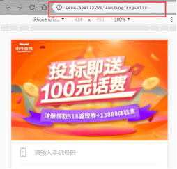
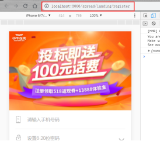
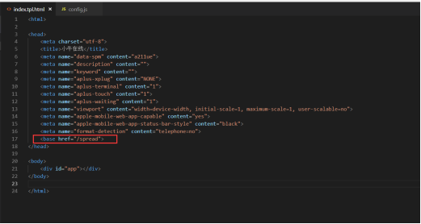
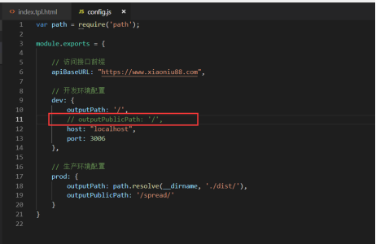
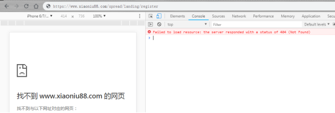
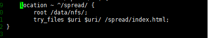

问题现象：
Vue单页应用本地开发，url默认为域名+端口+路由
url缺少项目名，且运维无法根据url规则进行相关配置；history路由模式下，打包之后刷新出现404的问题，hash模块没有此问题；
===================================================
修改之前之后url对比：

修改1：静态模板页面，添加根地址，为项目名

修改2：本地开发目录，去掉静态资源根目录配置

==================================================
404问题现象

修改1：ng配置
location ~ ^/spread/ {
root /data/nfs/;
try_files $uri $uri/ /spread/index.html;
}
